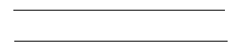
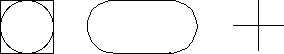

Labs for The Most Complex Machine
xTurtle Lab 1: Introduction to Programming
THIS LAB is an introduction to a high-level programming language called xTurtle. This language was created to be used with The Most Complex Machine, but it is in the mainstream of high-level languages, along with Pascal, Ada and C. It incorporates some ideas common to all these languages, such as variables, assignment statements, loops, if statements and subroutines. (You should find that you are already familiar with the basic ideas because of your work in previous labs.) The xTurtle language also contains special-purpose commands for doing turtle graphics. These commands can be used to draw pictures on the computer screen. In this lab, you will learn about the basic xTurtle commands, about loops and if statements, and about variables. Future labs will cover programming in more detail, including the use of subroutines.
This lab covers some of the same material as Chapter 6 of The Most Complex Machine. The lab is meant as a self-contained introduction to this material, but it would still be useful to read Chapter 6 before doing the lab.
This lab includes the following sections:
Start by clicking this button to launch xTurtle in its own window:
(For a full list of labs and applets, see the index page.)
Basic xTurtle Commands
When the xTurtle applet first starts up, it displays a white drawing area on the left, with a strip of controls on the right. There is a "turtle" in the center of the drawing area, represented as a small black triangle. The turtle has a position and a heading. Its heading is the direction it is facing, given as a number of degrees between -180 and 180. The turtle has a heading of zero when it is facing to the right, a heading of 90 when it is facing upwards towards the top of the screen, and a heading of -90 when it is facing downwards. Its position is given by two numbers: an xcoord, or horizontal coordinate, and a ycoord, or vertical coordinate.
The drawing area of the applet includes a twenty-by-twenty square in which the turtle can move and draw. This square has horizontal coordinates from -10 on the left to 10 on the right, and it has vertical coordinates from -10 at the bottom to 10 at the top. Because the drawing area is unlikely to be exactly square, the coordinates for the entire drawing area probably extend beyond the range -10 to 10 in either the horizontal or vertical direction.
The turtle starts out in the center of the screen -- at the point (0,0) -- facing to the right. It can obey commands such as "forward(5)," which tells it to move forward five units, and "turn(120)," which tells it to rotate in place through an angle of 120 degrees. (It turns counterclockwise if the number of degrees in positive and clockwise if the number of degrees is negative.) The number in parentheses is called a parameter for the command; you can substitute any number you want. The parameter in a "forward" command tells the turtle how far to move forward, while the parameter in the "turn" command tells it how many degrees to turn.
The turtle can draw a line as it moves. You can think of it as dragging a pen that draws as the turtle moves. The command "PenUp" tells the turtle to "raise the pen." While the pen is raised, the turtle will move without drawing anything. The command "PenDown" tells the turtle to lower the pen again.
Just below the drawing area of the applet are a text-input box and a button labeled "Do It". You can type commands for the turtle in the text-input box. When you press return or click on the "Do It" button, the turtle will carry out the command or commands that you typed. You can type in several commands at once, or you can type in one command at a time, pressing return after each command. Note also that after a command is executed, the contents of the text-input box are hilited, so that as soon as you start typing, the previous command will be erased and replaced with what you type. And finally, note that you can change the speed at which the turtle follows a sequence of commands by changing the setting of the Speed pop-up menu, which is one of the controls located to the right of the drawing area. (The speed is initially set to "Fast".)
As an exercise, you should try to make the turtle draw two separate, parallel lines, like this:

If you make a mistake, you can use the command "clear" to clear the screen and the command "home" to return the turtle to its original position and orientation (at the center of the screen, facing right).
The turtle can execute a number of other commands, in addition to forward, turn, PenUp, PenDown, clear, and home. Here are a few more basic commands. In this list, x and y are parameters. You can replace a parameter with a number when you use the command.
- back(x) tells the turtle to back up x units, that is, to move x units in the direction opposite to its current heading. For example, back(3) tells the turtle to back up three units. Negative numbers are allowed as parameters for both forward and back. Back(x) is provided only as a convenient shorthand for forward(-x).
- face(x) makes the turtle turn to a heading of x degrees from heading zero. For example, face(90) points the turtle straight up, face(-90) points it straight down, and face(180) points it to the left. Note the distinction between turn and face: turn specifies a change in direction from the current heading, while face specifies a new heading without any reference to whatever the old direction might have been.
- moveTo(x,y) tells the turtle to move from wherever it happens to be, to the point with coordinates x and y.
- move(x,y) is related to moveTo(x,y) in the same way that turn(x) is related to face(x). That is, while moveTo(x,y) says "move from the current location, whatever it is, to the point with coordinates (x,y)," move(x,y) says "move x units horizontally and y units vertically from the current location." Note that these commands do not depend upon or change the heading of the turtle.
- circle(x) draws a circle of radius x. You should think of the turtle moving in a circle starting from its current position and returning to that position at the end. Note that the turtle position is on the circle. If x is positive, the turtle curves to its left as it draws the circle, and the center of the circle is x units to the left of the original turtle position. If x is negative, the turtle curves to the right, and the center of the circle is to the right of the original position.
- arc(x,y) draws part of a circle of radius x. A full circle would be 360 degrees; arc(x,y) draws an arc of y degrees. As with circle(x), the turtle curves to the left if x is positive and to the right if x is negative. If y is negative then the turtle will "back up" along an arc. Note that the turtle changes position and heading as it draws.
- HideTurtle and ShowTurtle make the turtle (the small black triangle) invisible and visible. The turtle can still draw while it is invisible. (There is a check-box labeled "No Turtles" in the control strip to the right of the drawing area. When this box is checked, the turtle will always be invisible, regardless of whether the program uses any HideTurtle or ShowTurtle commands.)
Draw some pictures using these basic commands. Here are a few things you can try, for example:
- circle(7) circle(5) circle(3) circle(1)
- arc(5,90) arc(-5,-90) arc(5,90) arc(-5,-90)
- forward(5) turn(120) forward(5) turn(120) forward(5)
- forward(7) turn(90) forward(5) back(10)
Color
Unless you tell it to do otherwise, the turtle will draw everything in red. However, you can tell it to change its drawing color to any other color. The turtle understands the following basic color commands: red, blue, green, cyan, magenta, yellow, black, white, and gray. After it executes one of these commands, it will draw in the specified color until it comes to another color-change command. For example, the following sequence of commands will draw a triangle with each side in a different color:
green forward(5) turn(120) blue forward(5) turn(120) cyan forward(5) turn(120)Besides these basic color commands, there are two commands that can be used to specify any drawing color that the computer is capable of displaying. The commands are rgb(x,y,z) and hsb(x,y,z), where x, y, and z are parameters that can have any value in the range 0.0 to 1.0. To understand these commands, you need to know something about color. (But you can safely skip the details, if you want.)
Any color can be specified as some combination of the primary colors, red, green, and blue. In the command rgb(x,y,z), the parameters x, y, and z specify the amount of red, green, and blue in the color. For example, a value of zero for x indicates that the color is to contain no red at all, and a value of one for x means that the color contains the maximum possible amount of red. So, rgb(0,0,0) represents black, rgb(1,0,0) represents bright red, and rgb(0.5,0,0) is a darker red. Some other examples: rgb(0.8,0.8,0.8) is a very light gray, rgb(1,0.6,0.6) is pink, and rgb(0,0.4,0.4) is a dark blue-green.
The command hsb(x,y,z) uses an alternative method of specifying a color. In this command, x, y, and z represent hue, saturation, and brightness. The hue is the basic color: As x ranges from zero to one, the hue ranges through the spectrum from red through orange, yellow, green blue, violet, and back to red. The meaning of the brightness parameter is pretty clear, with a value of one representing the brightest color of a given shade. The saturation can be thought of as follows: A saturation value of one gives the purest possible version of a color. Decreasing the saturation from one towards zero is like mixing paint of that color with gray paint of equal brightness. The basic color remains the same, but it becomes "diluted."
You'll find some examples of using the rgb and hsb commands later in the lab.
Writing xTurtle Programs
The power of a computer comes from its ability to execute programs. The xTurtle applet allows you to write and run programs. Programs can include all the basic commands described above. They can also include loops, decisions, subroutines, and other features.
The applet can be configured to load one or more programs when it starts up. The applet that you launched with the button above should have loaded several sample programs that you will use in this lab. You can also write new programs from scratch. You can select among the programs that the applet knows about using the pop-up menu at the very top of the applet. You can begin a new program by clicking on the "New Program" button, or by choosing "[New]" from the pop-up menu. (There are also buttons for loading programs from files and for saving programs to files; however, the configuration of your Web browser might prevent these buttons from functioning.)
One of the sample programs for this lab is called "Necklace". Select this program from the pop-up menu at the top of the xTurtle applet. This program contains an example of a loop. The program itself reads:
PenUp moveTo(0,-5) PenDown LOOP arc(5,20) circle(-0.5) EXIT IF heading = 0 END LOOPIn addition to these commands, the program contains a lot of comments. A comment is anything enclosed between braces, { and }. Comments are meant for human readers of the program and are completely ignored by the computer. You should read the comments on the sample program to help you understand what it does and how it works.
In an xTurtle program, a loop consists of the word loop, then a sequence of instructions, then the words end loop. One of the instructions must be an exit statement, which gives a condition for ending the loop. In the sample program, the statement "exit if heading = 0" includes the condition "heading = 0. Since the heading is the direction that the turtle is facing, this condition is true when the turtle is facing in the direction zero (that is, directly towards the right).
When a loop is executed, the computer will execute the statements in the loop repeatedly. Each time the exit statement is executed, the computer tests the condition specified by that statement. If the condition is satisfied, the computer jumps out of the loop. (Ordinarily, after exiting from a loop, the computer jumps to the statement that follows the end loop. In this example, there is no further statement after the loop, so the program ends when the loop ends.)
To run a program in the xTurtle program, select it from the pop-up menu if necessary, so it is visible on the screen. Then click on the "Run Program" button. If there are no errors in the program, the computer will switch back to the drawing area and execute the program. You can control the rate of execution with the speed pop-up menu. You can pause the execution with the "Pause" button, and you can terminate it permanently with the "Stop" button. After the program has been executed, you can run it again by clicking the "Run Program" button. Note that every time you run a program, the turtle starts out in its initial configuration: at the center of the drawing area, facing right, with the pen down, and with the drawing color set to red.
Run the Necklace program, and try to understand how it works. As another example, click on the "New Program" button and then type in and run the following program. (Instead of typing it, you might want to be clever and use cut-and-paste.)
DECLARE hue hue := 0 LOOP hsb(hue,1,1) forward(5) back(5) turn(360/100) hue := hue + 0.01 exit if hue = 1 END LOOPThis program uses a variable named "hue". (You can use any names you want for variables, as long as you avoid words that already have a special meaning, such as "loop" and "if".) A variable is just a memory location which has been give a name and which can be used to store a value. In xTurtle, you give a name to a memory location with a declare statement. Once you have declared a variable, you can store a value in it with an assignment statement, which has the form
<variable-name> := <value>The operator := is called the assignment operator. It tells the computer to calculate the value on the right and to store it into the variable on the left. The value on the right can be given as a number, as another variable, or as a mathematical formula. For example:
hue := hue + 0.01 x := 17 newAmount := oldAmount cost := length * width * costPerSquareFootNext, we turn to an example that introduces the if statement. This is the sample program "RandomWalk", which should already be loaded into the xTurtle applet. Select the "RandomWalk" program from the pop-up menu and run the program several times. This program makes the turtle do a "random walk" in which it repeatedly moves in a randomly chosen direction. Read the program and the comments on it, and try to understand how it works.
In particular, look at the if statement in the Random Walk program. An if statement is used to decide among alternative courses of action. An if statement begins with the word if and ends with the words end if. (The "end if" here is not a separate command; it is merely a required syntactic marker to mark the end of the if statement. It is very different from an "exit if" statement, and you should try not to confuse them.) The exact rules for using if statements are rather complicated, and are covered in The Most Complex Machine and in the detailed on-line information about xTurtle. However, you should be able to get the basic idea by looking at the example in the sample program.
Interacting with the User
Any real programming language needs to provide some way for a program to communicate with the person who is using the program. The xTurtle programming language provides only minimal support for input and output, but what it provides is enough for a program to have a simple dialog with the user.
There are two commands for output (sending information from the computer to the user), and one command for input (getting information from the user into the computer). All of these commands use strings. A string is sequences of characters enclosed in quotes, such as: "Hello". The command
DrawText("Hello")will print the string Hello in the drawing area at the current turtle position. (Note that the quotes are not of the string that is displayed. The quotes are just there in the program to tell the computer that this is a string.)
The command
TellUser("Hello")will display {\tt Hello} in a little green-colored box in the center of the display area. There will also be a button labeled "OK". The user reads the string and then clicks on the OK button to get rid of the box. The TellUser command has no permanent effect on the picture in the drawing area.
Finally, there is the more complicated input command, AskUser. This command allows the user to enter a number; the number entered by the user will be stored in a variable. The variable must, of course, be declared before it can be used in this command. For example, assuming that a variable named "betAmount" has been declared, the command
AskUser("How much do you want to bet?", betAmount)will display a box containing the string "How much do you want to bet?" along with a text-input box where the user can enter a response. The number entered by the user will be stored in the variable betAmount, and the program can then use that number by referring to the variable.
All of the input/output commands have a nice feature that allows you to include the value of a variable in a string. If a string includes the special character #, then that # must be followed by the name of a variable. When the string is displayed, the # and the name will be replaced by the value of the variable. For example, if betAmount and winnings are variables with the values 25 and 75, then
TellUser("You bet #betAmount dollars; you win $#winnings.")would display the string: You bet 25 dollars; you win $75.
All of this is illustrated in the sample program "InputOutputExample". You should select this program from the pop-up menu, read it, run it, and try to understand it.
Exercises
Exercise 1: Find a sequence of xTurtle commands to draw each of the following: a square with a circle inside it; a pair of parallel lines connected by half-circles at each end; a plus sign. The pictures should look something like this:

Exercise 2: Find a sequence of xTurtle commands that will draw your initials. Draw each initial in a different color.
Exercise 3: For this exercise, experiment with the "Necklace" sample program. The original program draws a large circle of radius 5, made up of a sequence of 20-degree arcs. Between each pair of arcs, another small circle is added as decoration. You can try changing the size of the arcs in the large circle. For example, change the "20" to "3" and you'll get a decoration every 3 degrees instead of every 20 degrees. You could also change the radius in the arc command. You can try using a different decoration. For example, try changing circle(-0.5) to forward(5) back(5). You could be more creative. Try using a triangle or a square as decoration. (Whatever commands you use to draw the decoration, you should be sure that they return the turtle to the same position and heading as when it starts.) Try to find the prettiest variation on the "necklace" theme that you can find.
Exercise 4: The following program was used as an example earlier in the lab. It draws 100 lines radiating out from a central point. Each line is drawn with a different "hue,", and the colors of the lines range throughout the entire spectrum.
DECLARE hue hue := 0 LOOP hsb(hue,1,1) forward(5) back(5) turn(360/100) hue := hue + 0.01 exit if hue = 1 END LOOPHow would you modify this program so that, instead of changing the hue from one line to the next, you change the saturation instead? What does the resulting picture look like? (Try it and find out!)
Exercise 5: The word random can be used in a program to represent a random value in the range from 0.0 to 1.0. (Random is actually a function with no parameters, but it acts like a variable that has a different value each time it is used.) What happens if you substitute the command rgb(random,random,random) for the command hsb(hue,1,1) in the program from Exercise 4? Why? Explain carefully what the modified program does.
Exercise 6: Modify the "RandomWalk" sample program so that each line is a different, randomly chosen color.
Exercise 7: In the "RandomWalk" sample program, the computer chooses one of the four directions 0, 90, -90 and 180 at random. Modify the program so that it chooses one of the three directions 0, 120 and -120 instead. It should have an equal chance of choosing any of these directions. Make sure that you test your program!
Exercise 8: Write a program that can draw a square in any of three different colors. It should let the user of the program decide which color to use. Ask the user to "Enter 0 for red, 1 for blue, and 2 for green." If the user enters an invalid response, you should display an error message instead of a square.
Exercise 9: With what you have learned in this lab, you can write a simple guessing game program (which will use none of the graphical capabilities of xTurtle). Write a program in which the computer chooses a random integer between 1 and 100, and the user tries to guess the number. Each time the user makes a guess, the computer should (honestly) tell the user "Sorry, your guess is too high," "Sorry, your guess is too low" or "You got it." Although this program does something completely different from the random walk sample program, nevertheless it is similar in general outline. In particular, you will use an if statement inside a loop. Use a loop to allow for repeated guesses. The loop will end when the user guesses correctly. Your program can begin the following three lines, before the loop:
DECLARE answer DECLARE guess answer := randomInt(100)Your program should include comments. Like the sample programs, it should use indentation to show the structure of the program. (The "Indent" button can be used to automatically indent a program; this feature is also useful for finding certain types of errors in a program, such as a missing end if.)
Exercise 10: This exercise assumes that you have completed Exercise 9 successfully. Improve the program from that exercise so that after each game, it will give the user the option of playing again. You will need to add another loop to the program, containing the loop that already exists. You will also need to know a new command. The YesOrNo command can be used to ask the user a yes-or-no question. Specifically, the command
YesOrNo("Do you want to play another game?", response)will ask the user the given question. It will store a zero in the variable response if the user answers no and will store a one in that variable if the user answers yes. The outer loop should continue until the value of the response is zero.
Exercise 11: You have probably already discovered that the computer can display error messages if you try to run a program that contains an error. Errors that the computer can find before actually running the program are called syntax errors. The following program contains several syntax errors. Find each error and explain what is wrong in each case. (You can type in the program and let the computer find the errors.)
DECLARE length length = 8 LOOP forward length turn(90) length := length - 1 EXIT IF length equals 0 END LOOPSome errors can only be found when a program is running. For example, what error occurs when the following program is run? (Type it in and find out!)
DECLARE sum, count sum := 0 count := 0 LOOP sum := sum + 1/count count := count + 1 EXIT IF count = 10 END LOOP DrawText("The sum is #sum.")There is a third -- and much worse -- type of error, which occurs when the program gives an incorrect result but the computer gives you no warning of the fact that the answer is wrong. Give an example of such an error. Explain why the computer cannot detect such "wrong-answer errors."
Exercise 12: This exercise assumes that you are familiar with the "xComputer" model computer, which is used in some other labs. Write a short essay comparing the assembly language of xComputer with the high-level programming language, xTurtle. For example, you could: compare the way loops are constructed in each language; compare labels in assembly language to variables in xTurtle; and compare the way computations are done in assembly language with the way they are done by assignment statements in xTurtle.
This is one of a series of labs written to be used with The Most Complex Machine: A Survey of Computers and Computing, an introductory computer science textbook by David Eck. For the most part, the labs are also useful on their own, and they can be freely used and distributed for private, non-commercial purposes. However, they should not be used as a formal part of a course unless The Most Complex Machine is also adopted for use in that course.--David Eck (eck@hws.edu), Summer 1997